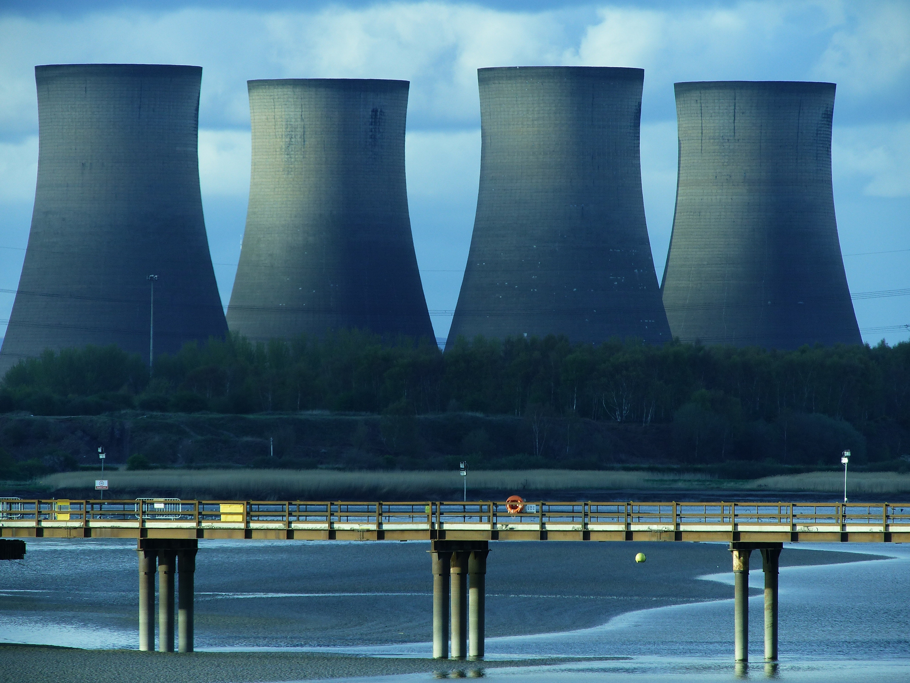
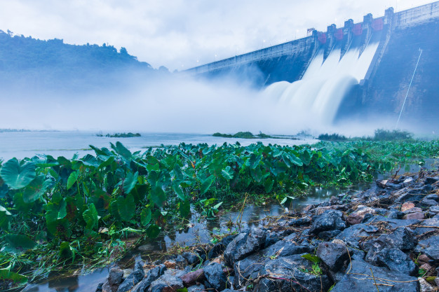

O que são energias limpas?
Para comerçarmos a falar sobre isso precisamos saber o que são energias
limpas.Quando se fala em “energia limpa”, não estamos falando de um tipo de geração de energia que não
cause nenhum impacto ambiental, pois, até o momento, esse sonho ainda não se tornou realidade. Na
verdade, a energia limpa refere-se àquela fonte de energia que não lança poluentes na atmosfera e que
apresenta um impacto sobre a natureza somente no local da instalação da usina.
Quais são as energias renováveis?
Entre as formas de energia que atendem a esses requisitos, podemos citar: energia eólica, energia solar,
energia maremotriz, energia geotérmica, energia hidráulica e energia nuclear. Todas essas formas de
energia causam impactos ambientais, mesmo que sejam mínimos, porém, não interferem na poluição em nível
global.
Energia eólica
A energia eólica tem como sua principal e única fonte de matéria-prima o vento, que é captado através de
uma turbina de duas a três pás, semelhante a hélices, que são chamadas de eólia. Seu rendimento depende
da rapidez e constância dos ventos na região, o que requer uma análise desses dados antes desse sistema
de energia ser implantado.
As vantagens principais da energia eólica são que o impacto ambiental é praticamente nenhum, e o custo
de geração de eletricidade é baixo.
Infelizmente, algumas desvantagens também existem, pois apesar de
reduzidos, ainda há impactos ambientais na instalação das usinas, causando alteração na paisagem local;
pode haver ameaça para os pássaros se as eólias forem colocadas em suas rotas de migração, pode haver
também poluição sonora e interferência em transmissões de rádio e TV.

Energia Solar
Recebemos do Sol uma quantidade 10 mil vezes maior de energia do que a necessária para a população
mundial em um ano. Assim, toda essa energia pode ser aproveitada por meio de painéis com células
fotovoltaicas. Essa energia térmica captada pode ser usada de modo direto em residências, como para
aquecer a água do chuveiro ou aquecer ambientes, e pode também ser usada indiretamente para a geração de
energia elétrica.
Apesar desse tipo de energia envolver altos riscos de contaminação, isso só acontece se houver acidentes
ou se o lixo atômico não tiver um tratamento e destino corretos. Mas se tudo transcorrer bem, a energia
nuclear é considerada limpa, pois não causa poluição pela emissão de substâncias.
Os detalhes sobre
como a energia elétrica é produzida nas usinas nucleares podem ser vistos no texto Reator Nuclear; mas,
de maneira resumida, trata-se de uma reação de fissão nuclear, que libera uma quantidade colossal de
energia na
forma de calor. Esse calor faz a água ferver, sendo que seu vapor aciona uma turbina geradora,
que produz eletricidade.
A maior vantagem desse tipo de energia é a grande quantidade de energia
elétrica que é gerada. Mas além das desvantagens já mencionadas, que são os acidentes, ainda há o custo
elevadíssimo para sua implementação e o fato de que a água quente que volta para os rios e lagos pode
causar poluição térmica.

Energia maremotriz
Esse tipo de energia é produzido por meio da instalação de turbinas perto dos mares, em que se produzirá
energia elétrica por meio da energia potencial das ondas do mar.

<<<<<<< HEAD
Energia Nuclear
Apesar desse tipo de energia envolver altos riscos de contaminação, isso só acontece se houver acidentes
ou se o lixo atômico não tiver um tratamento e destino corretos. Mas se tudo transcorrer bem, a energia
nuclear é considerada limpa, pois não causa poluição pela emissão de substâncias.
Os detalhes sobre como a energia elétrica é produzida nas usinas nucleares podem ser vistos no texto
Reator Nuclear; mas, de maneira resumida, trata-se de uma reação de fissão nuclear, que libera uma
quantidade colossal de energia na forma de calor. Esse calor faz a água ferver, sendo que seu vapor
aciona uma turbina geradora, que produz eletricidade.
A maior vantagem desse tipo de energia é a grande quantidade de energia elétrica que é gerada. Mas além
das desvantagens já mencionadas, que são os acidentes, ainda há o custo elevadíssimo para sua
implementação e o fato de que a água quente que volta para os rios e lagos pode causar poluição térmica.

Energia Hidráulica
Esse tipo de energia é bem conhecido, sendo que ela é proveniente do movimento das águas.
O seu rendimento é muito superior aos que foram mencionados até aqui. Porém, os seus impactos ambientais
são imensos, incluindo destruição de ecossistemas, alteração de paisagens, alagamentos, bloqueio nos
rios e deslocamento da população que morava no local onde a usina foi construída.

=======